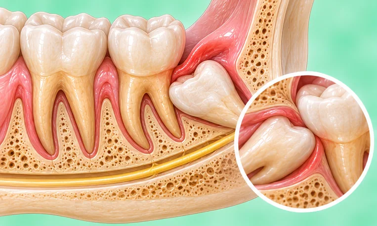

颞下颌关节脱位
耳前的颌关节滑出原位，可能卡住
这是什么
连接下颌和颅骨的关节可能向前滑出关节窝。下颌可能卡在张开的位置，耳朵附近疼痛。
- 耳旁的颌关节
- 大打哈欠或大口咬之后
- 下颌卡住张开，疼痛
- 就诊科室
- 医院急诊医生；牙医或口腔颌面外科医生
- 多发人群
- 成年人；颌关节常发出响声或松弛的人
- 传染性
- 不传染
- 病程
- 需要医生把关节复位；可能再次发生
常见表现
咀嚼时下巴痛颞下颌关节痛
其他症状
- 下颌像被卡住，嘴巴合不上
- 牙齿无法正常对合
- 脸颊肌肉痉挛酸痛
为什么会这样

运动与碰撞运动损伤
其他原因
- 嘴张得很大，例如打哈欠或大口咬东西
- 颌关节松弛或长期有颌关节问题
- 长时间张口做牙科处理
出现这些情况请先看医生
- 呼吸或吞咽困难：拨打999
- 头部或面部受撞击并出现晕厥、呕吐或大量出血：立即去医院
- 下颌卡住张开合不上：去医院
- 脸部麻木，或咬合突然不对
- 下颌反复滑出
如果有以上情况，请先看医生，再来做调理。
本页只是一般性的健康资讯。请继续按时服用平常的药物，并继续看医生。
请继续日常治疗
请继续按医嘱服药，并按时复诊。我们的调理是温和的辅助，不能代替医疗。
日常护理
- 不要自己用力把下颌推回去
- 让下颌休息，并轻轻托住嘴巴
- 医生处理后一段时间内吃软食
- 避免大打哈欠、大声喊叫和嚼口香糖
- 请教医生或牙医如何保护这个关节
告诉理疗师
- 最近颈部受伤或手术
- 骨质疏松
- 心脏起搏器或金属植入物
- 服用抗凝药
调理师会在开始前和你确认这一项。
常见问题
颞下颌关节脱位是什么？
耳前的颌关节滑出原位，可能卡住。连接下颌和颅骨的关节可能向前滑出关节窝。下颌可能卡在张开的位置，耳朵附近疼痛。
颞下颌关节脱位有哪些常见表现？
咀嚼时下巴痛
为什么会有颞下颌关节脱位？
运动与碰撞
有颞下颌关节脱位要怎么照顾自己？
不要自己用力把下颌推回去；让下颌休息，并轻轻托住嘴巴；医生处理后一段时间内吃软食；避免大打哈欠、大声喊叫和嚼口香糖；请教医生或牙医如何保护这个关节
AI Body Master 的调理对颞下颌关节脱位有帮助吗？
调理是温和的无针经络养生辅助，不能治疗或治愈颞下颌关节脱位，也不能代替药物或医生。开始前请告诉理疗师。
相关疾病
参考资料: General information based on public health sources such as Mayo Clinic, NHS, Cleveland Clinic and NCBI StatPearls.
页面更新: 2026-11-01